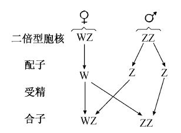
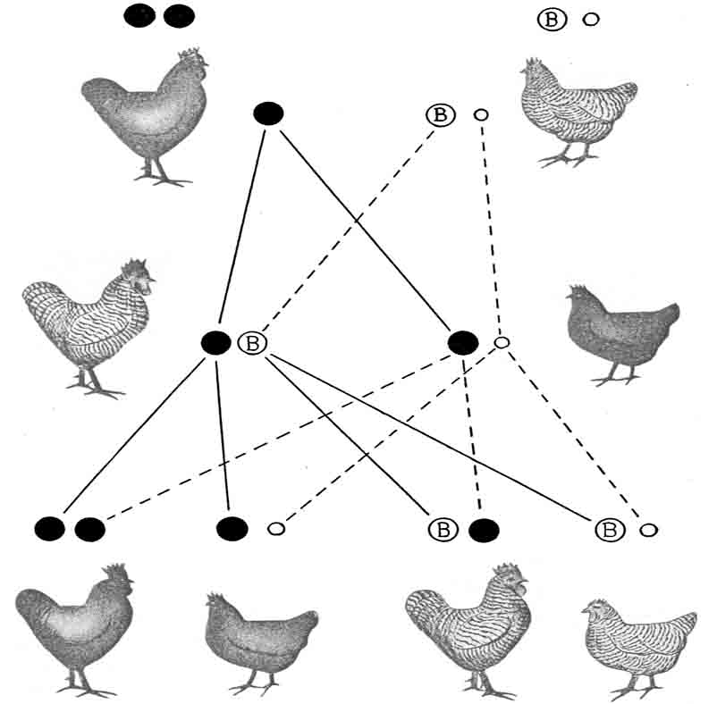

鸟型（WZ—ZZ）
图118示另一种性别决定机制——鸟型。雄鸟有两条相同的性染色体，后者可称为ZZ。这两条染色体在一次成熟分裂中彼此分离，于是每一个成熟的精子有一条Z。雌鸟有一条Z染色体和一条W染色体。卵子成熟时，每个卵子只能得到一条。所以半数的卵子有一条Z，半数的卵子有一条W。任何W卵子同Z精子受精，即成雌鸟（WZ）；任何Z卵子同Z精子受精，即成雄鸟（ZZ）。

图118 示WZ—ZZ型的性决定机制
这里，我们又找到一种机制可以自动地产生同样数目的雌雄两种个体。同前例一样，从受精时所发生的染色体组合中，产生了1∶1的性别比率。在鸟类里，这种机制的证据来自细胞学和遗传学两个方面，不过细胞学证据还不完全满意。
根据Stevens的研究，雄鸡似乎有两条同样大的长染色体（图119），假定是XX；母鸡只有一条长染色体。Shiwago和Hance证实了这种关系。

图119 公鸡和母鸡的染色体群（仿Shiwago）
鸟类的遗传学证据是毫无疑问的。这些证据来自性连锁遗传。如果用黑色狼山型雄鸡同花纹Plymouth Rock母鸡交尾，子代的雄鸡都有花纹，母鸡尽是黑色（图120）。假若Z染色体上含有分化基因，则上述结果是意料得到的，因为子代母鸡的一条Z染色体是从父方来的。如果把子代母鸡和雄鸡互相交尾，会得出花纹和黑色的母鸡和雄鸡共四种，其比例为1∶1∶1∶1。

图120 示黑鸡（●）同花纹鸡
 的杂交，说明其性连锁遗传
的杂交，说明其性连锁遗传
在蛾类也发现了同样的机制，不过它的细胞学证据比较明确。Abraxas蛾的深色野生型雌蛾同浅色突变型雄蛾交配，子代的雌蛾色浅像父方一样；雄蛾色深像母方一样（图121）。雌蛾的一条Z从父方得来，雄蛾从父方得一条Z，从母方得到另一条Z。母方的Z上有深色基因，属于显性，所以产生了子代雄蛾的深色。

图121 Abraxas尺蠖蛾的性连锁遗传
田中义麿发现蚕的透明皮肤是一种性连锁性状，好像是借Z染色体遗传到下代。
Fumea casta雌蛾有61条染色体，雄蛾有62条。卵母细胞的染色体结合以后有31条（图122a）。在第一次分出极体时，30条染色体（二价染色体）各自分裂，然后分别进入两极。第31号染色体不分裂，向任一极进行（图122（注：原文中作“图119，b和b′”，译文中修正为“图122，b和b′”。——译者注。b和b′）。结果，半数的卵子会有31条，另一半卵子则有30条。第二极体分出时，所有染色体分裂，所以各个卵子的染色体数目仍和其分裂前的数目相同（即31条或30条）。精子成熟时，染色体两两接合成31条二价染色体。在第一次分裂时二价染色体分成两条；在第二次分裂时所有染色体分裂，每个精子有31条染色体。卵子受精，得出下述各种组合：
Seiler发现Talaeporia tubulosa的雌蛾有59条染色体，雄蛾有60条。Solenobia pineta的雌蛾和雄蛾以及其他几种蛾类都看不到不成对的染色体。另一方面，Phragmatobia fuliginosa却有一条复染色体，其中包括性染色体。雄蛾有两条这样的染色体，雌蛾只有一条。这种关系在W要素和Z要素不是分开的染色体的其他蛾类里，也似乎不是不可能存在的。

Federley用Pygaera anachoreta和P.curtula两种蛾杂交，也证实了蛾类的性连锁遗传。这个例子是有趣的，因为在每一物种内，雌雄幼虫互相类似。但不同物种的幼虫则表现出了种间的差异。这种在同种内没有二形的种间差异，却成为子代幼虫里性二形的根据（当杂交循“一个方向”进行时），因为，正如结果所表示的，两种幼虫之间的主要的遗传区别，是在Z染色体上面。如果anachoreta为母方而curtula为父方，则杂种雄幼虫在第一次蜕变后，便会显然不同。杂种雄虫同母族（anachoreta）极相类似，而杂种雌幼虫则同父族（curtula）相仿佛。

图122 a.Fumea casta卵子减数染色体群；b和b′卵子第一次成熟分裂时，外极和内极的染色体群；只有一极有一条X染色体（仿Seiler）
如果用anachoreta为父方，curtula为母方，其子代杂种都完全相似。这些结果可用下述假设来解释，即anachoreta Z染色体上有一个（或多个）基因，对于curtula Z染色体上的一个（或多个）基因，呈显性作用。这个例子之所以特别有趣，是因为在这里一个物种的基因，对于另一物种同一染色体上的等位基因，呈显性作用。这项分析，也同样适用于子代雄蛾回交任一亲型所产生的孙代中，只要考虑到后代的三倍性（参考第9章）。
我们没有理由来假设XX—XY型的性染色体同WZ—ZZ型的性染色体，是一样的东西。反之，我们也难于想象一个类型如何能直接变成另一个类型。不过另一个假设在理论上是没有困难的，就是尽管两个类型所牵涉的具体基因是相同的或几乎相同的，与决定雌雄有关的某种平衡中的变化，仍然可以在两个类型里独立发生。